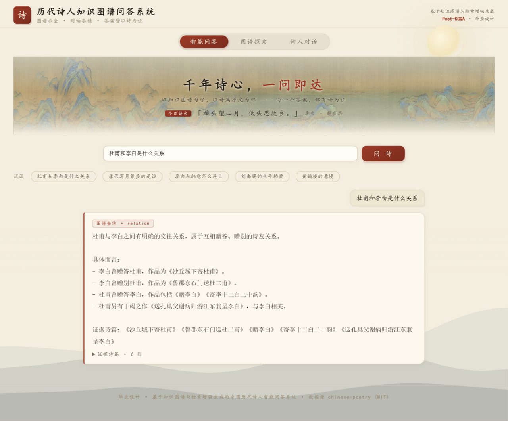
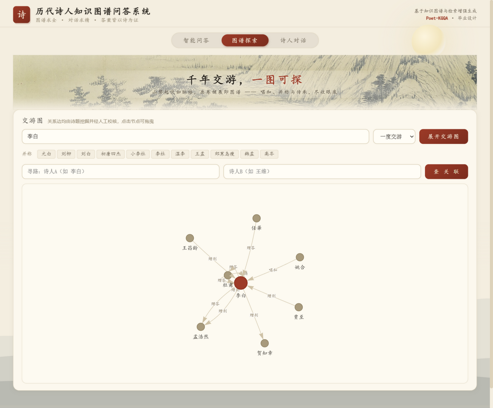
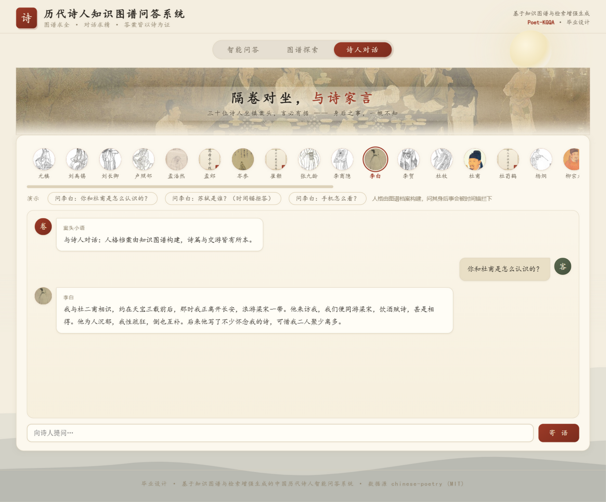

这是什么
一个把《全唐诗》读"厚"的问答系统： Neo4j 图谱 + FAISS 向量双轨检索、BERT NER 消歧、DeepSeek 证据化生成， 全部组件可在普通笔记本 CPU 上运行，任一组件缺席自动降级、永不离线。事实型回答一律携带可溯源的诗篇证据， LLM 只组织语言、不生成查询语句——"图谱管事实、模型管表达"。
智能问答 · 图谱查询 + 语义检索

问"杜甫和李白是什么关系"——互赠酬答的诗友关系，证据诗篇可展开回溯原文
图谱探索 · 交游网络可视化

李白的一跳交游子图：杜甫、孟浩然、王昌龄、贺知章……边上的标签就是关系类型
诗人对话 · 人格由图谱构建

30 位诗人可对话；问其身后事会被"生卒年时间锚"优雅拦下，不会穿越
实验结果
- 一致性主实验（n=100，五类问题）：裸 LLM 66% vs 图谱约束 100%（+34pp）
- 检索消融（15 条名句锚点，hit@3）：向量+双路增强 80.0% vs 关键词扫描 13.3%
- 交游边：443 条诗篇级证据 → 三层消歧 → 43 对隔离边逐条人工复核 → 138 对全部定案
在线试用部署于云服务器，长期可用；想在自己电脑跑？按仓库 README 一分钟本地部署